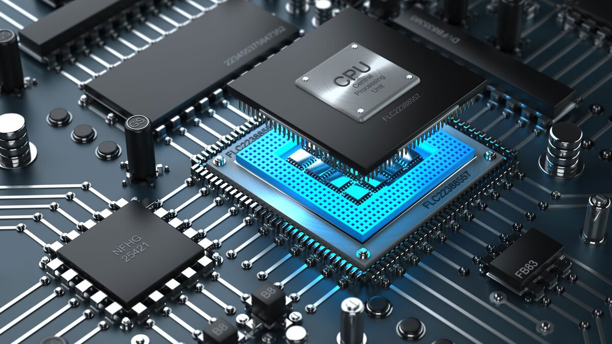

Вероятностные процессоры — это новый подход к обработке информации, который основан на принципах байесовской вероятности. Инженеры американской компании Lyric Semiconductor разработали первый вероятностный процессор, который позволяет распределить нагрузку между узлами системы и повысить производительность. Вероятностные процессоры могут быть применены в поисковых системах, финансовых моделях и прогнозах, а также в обработке биологических и медицинских данных.
